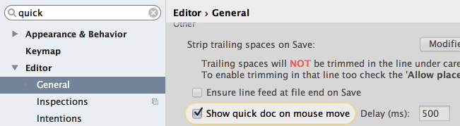

You don't need to invoke quick documentation explicitly (&shortcut:QuickJavaDoc;) - if you just move your mouse pointer over the desired symbol, the quick documentation pop-up window will show automatically.
To enable this feature, select the check box Show quick doc on mouse move in the General page of the editor settings:
